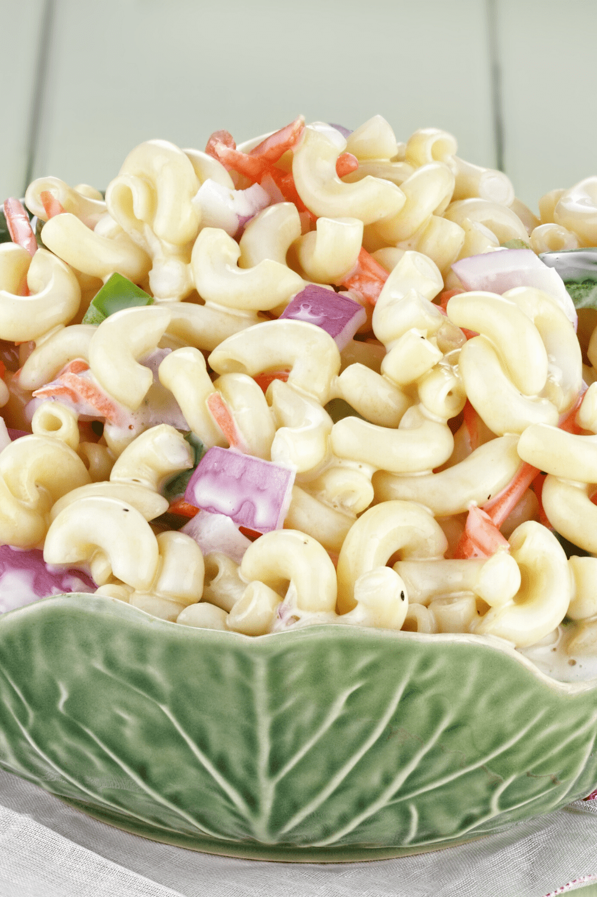

Summer Macaroni Salad

Description
What is Summer Macaroni Salad? It’s macaroni salad but with a fun twist. The secret lies in the dressing. Unlike regular macaroni salad which uses Miracle Whip, Amish macaroni salad uses real mayo, yellow mustard, sugar, and vinegar, creating a sweet and tangy flavor.
- 2 cups elbow macaroni (uncooked)
- 3 hard-cooked eggs (chopped)
- 1 small onion (chopped)
- 3 celery stalks (chopped)
- 1 small red pepper (seeded and chopped)
- 2 tablespoons dill pickle relish
- 2 cups creamy salad dressing (such as Miracle Whip)
- 3 tablespoons prepared yellow mustard
- 3/4 cup white sugar
- 2 1/4 teaspoon white vinegar
- 1/4 teaspoon salt
- 3/4 teaspoon celery seed
- Cook macaroni noodles according to package instructions. Set aside to cool.
- In a large bowl, combine the hard-boiled eggs, onion, celery, red pepper, and dill pickle relish.
- In a separate container, mix together the salad dressing, mustard, white sugar, vinegar, salt and celery seed.
- Pour the dressing mixture over the vegetables. Add the macaroni and mix until well combined.
- Cover the bowl and refrigerate for at least one hour. Serve chilled.